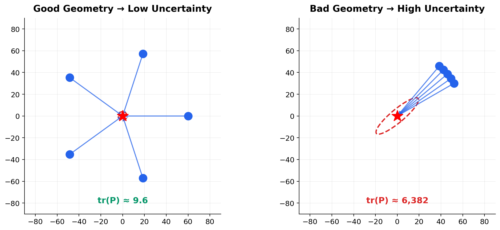
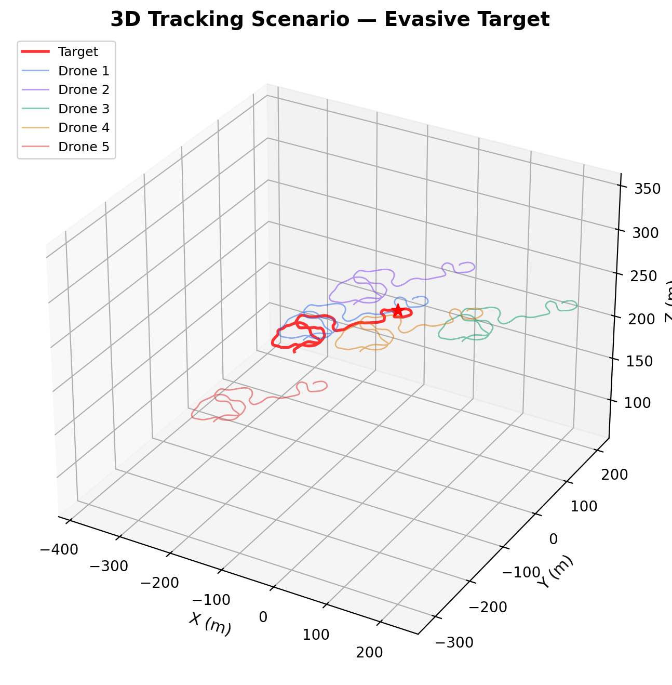
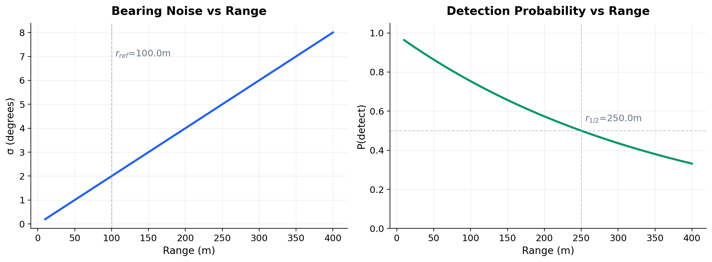
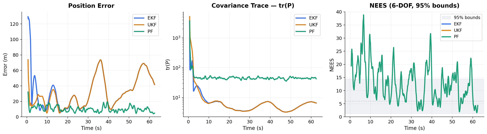
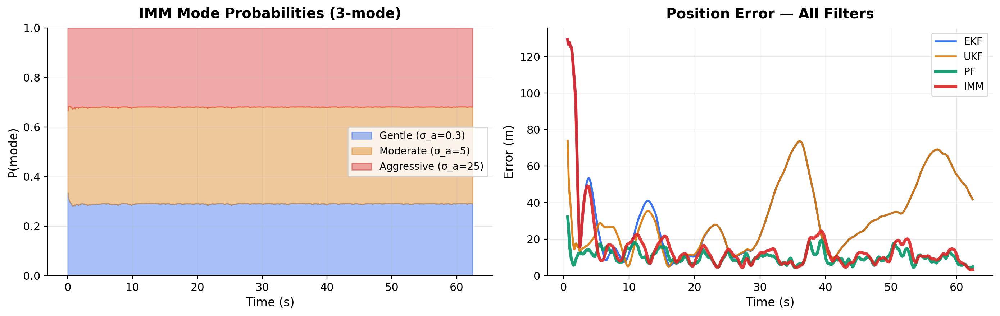
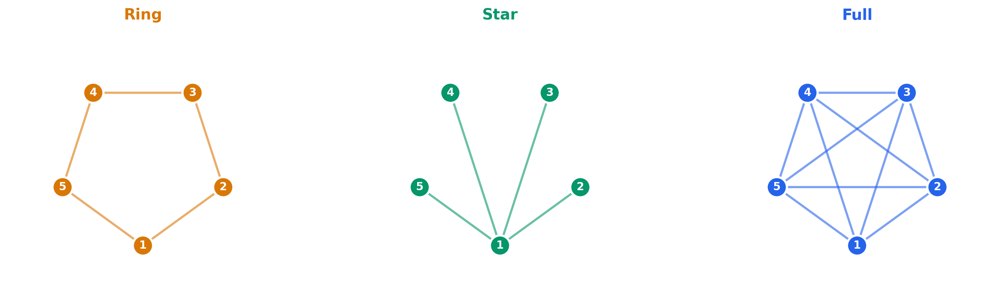
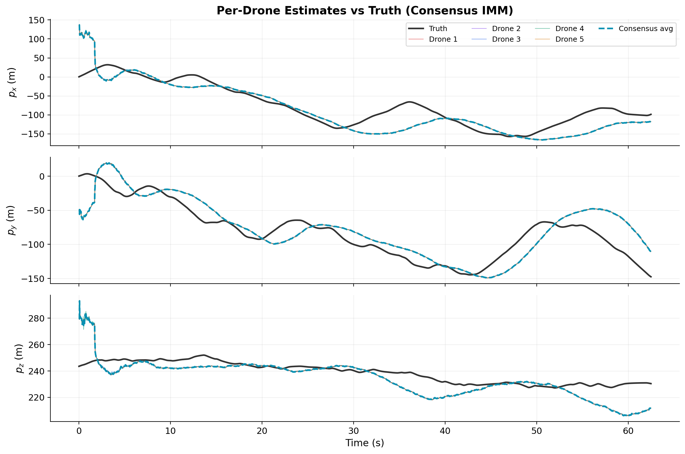
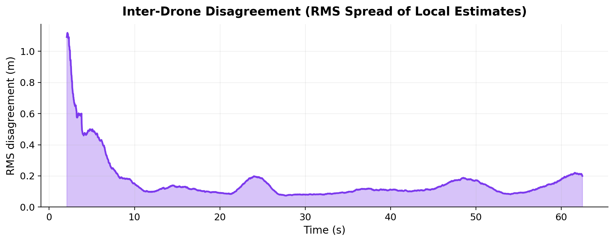

Distributed Bayesian Filtering with Bearing-Only Sensors
Alexandre Carlhammar
AA273 — State Estimation and Filtering | Stanford, Winter 2026
Track a moving target using 5 cooperative drones with bearing-only cameras

Applications: search & rescue, wildlife monitoring, surveillance, defense

Filter assumes straight-line motion (σ_a = 0.6 m/s²)
Target actually turns, accelerates, dives
→ Prediction diverges during maneuvers
\(\sigma(r) = 2° \cdot r\, /\, 100\text{m}\)
50 m → 1° | 200 m → 4° | 300 m → 6°
→ Farther drones give worse measurements
\(p(r) = 0.99 \cdot e^{-kr^2}\), drops to 50% at 250 m
Camera FOV ±15° — miss if gimbal is off
→ Drones intermittently go blind
Good estimate → on target → measurement → better ✓
Bad estimate → off target → nothing → stays bad ✗
→ Estimation errors can snowball

\(\mathbf{Q}\): piecewise-constant white noise, σ_a = 0.6 m/s²
\(\Delta_i = \mathbf{x}_{1:3} - \mathbf{p}_i\), \(r_i = \|\Delta_i\|\), \(\;\mathbf{v}_i \sim \mathcal{N}(0, \sigma^2(r_i)\,\mathbf{I}_2)\)
\(d_{xy} = \sqrt{\Delta x^2 + \Delta y^2}\)
→ Nonlinear h(x) — relinearized at each step
→ Velocity columns are zero — bearing measures position only
→ Singularity when \(d_{xy} \to 0\) (target directly above/below)
Setup: Single fusion node receives all 5 bearing streams. 3000 steps (~63 s), evasive target (12 m/s, turns up to 2 rad/s), EKF-driven gimbal.
Fast (22 kHz). Linearization error underestimates range uncertainty.
No Jacobian needed. Better nonlinear capture (5.6 kHz).
Handles range ambiguity & multimodality. 300x slower (73 Hz).
| Filter | RMSE | NEES (→6) | Speed |
|---|---|---|---|
| EKF | 42.0 m | 5,249 | 22 kHz |
| UKF | 37.0 m | 5,117 | 5.6 kHz |
| PF | 11.2 m | 12.9 | 73 Hz |

EKF/UKF assume constant-velocity (σ_a = 0.6). Real target: mean |a| = 12 m/s², peaks at 40 m/s². IMM runs 3 parallel EKFs, blends by measurement likelihood:
σ_a = 0.3 m/s²
Coasting
σ_a = 5 m/s²
Turns
σ_a = 25 m/s²
Hard maneuvers
| Filter | RMSE | Final | NEES (→6) |
|---|---|---|---|
| EKF | 42.0 m | 39.6 m | 5,249 |
| UKF | 37.0 m | 39.6 m | 5,117 |
| IMM | 24.7 m | 3.9 m | 105 |
| PF | 11.2 m | 6.2 m | 12.9 |

Layer 1 assumed a centralized fusion node — all measurements routed to one place. In reality: no guaranteed central server, limited comm range, link failures. Each drone must run its own local filter and share information with neighbors.
In covariance form, fusing two estimates requires inverting and combining P matrices — messy. In information form, fusion is additive:
N-scaling: each drone multiplies its local contribution by N so that averaging across the swarm recovers the centralized sum.

Works on any connected graph for any N. Each drone only talks to its neighbors — no global knowledge needed.
\(w_{ij} = \frac{1}{1 + \max(d_i, d_j)}\) — only needs neighbor degree, not swarm size N. Doubly stochastic → guaranteed convergence to true average.

5 local estimates (colored) vs consensus average (dashed blue) vs truth (black). All drones converge despite only seeing local bearings.

Full topology + L=50 iterations → exact match with god-node centralized filter (diff = 0 to machine precision)
30% random link dropout per step → consensus still converges
Ring topology (2 neighbors each) → slower but functional
Star hub failure → graceful fallback
Consensus EKF — single CV model per node
Consensus IMM — 3-mode IMM per node + info-form consensus. Each drone detects maneuvers locally.
Angular diversity of the drone constellation is the primary driver of estimation accuracy
Normal spawn (diverse): tr(P) = 9.6
Cluster spawn (collinear): tr(P) = 6,382
Full topology with sufficient iterations achieves exact centralized performance
For small swarms (N=5), fusion is not the bottleneck
Target dynamics unknown to filter — IMM adapts mode probabilities to match actual maneuvers
Robust to CV/CA model uncertainty
Filter estimate drives camera aim → better measurements → better estimate
Creates emergent self-improving behavior
Layers 1–2 showed that bearing geometry dominates estimation accuracy. Natural next step: learn where to fly to maximize information.
PPO agent outputs 3D velocity commands per drone
Reward: minimize tr(P) from the consensus filter
Obs: egocentric relative positions, covariance eigenvalues, neighbor detection stats
Drones start collinear → worst-case geometry
Baseline chase+offset: tr(P) = 2.5M (diverges)
RL policy: tr(P) = 6,201 — 400x better
| Scenario | tr(P) | RMSE |
|---|---|---|
| Baseline, normal spawn | 9.6 | 3.9 m |
| Formation oracle, normal | 29.1 | 4.5 m |
| RL policy, normal spawn | 258 | 8.4 m |
| RL policy, cluster spawn | 6,201 | 1,698 m |
| Baseline, cluster spawn | 2.5M | 1,936 m |
Normal spawn = diverse initial geometry (easy). Cluster = collinear start (hard). RL shines when initial geometry is bad.
PPO instability: performance peaks at 5–8M steps then degrades
Normal spawn baseline still wins — RL hasn't matched good initial geometry
Two-phase (spread then track) didn't improve over single-phase
Questions?
Alexandre Carlhammar | acarlham@stanford.edu
github.com/alex-crlhmmr/Cooperative-Multi-Drone-Target-Tracking